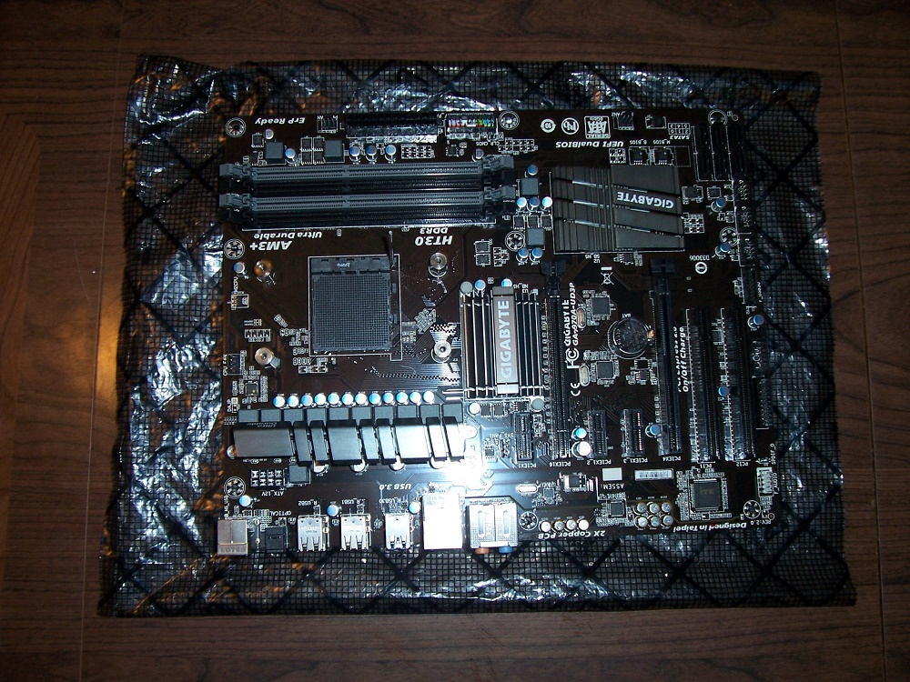

The CPU (central processing unit) and Ram (random access memory) are the heart and soul of the computer. Fortunately, they're also the easiest parts to install in a computer. Not only do these two components work closely together, they should also be installed together. Since we haven't installed our motherboard yet, and since things can get pretty cramped inside a computer case, its best to install these two components on the motherboard before placing the motherboard into the case. We can then move all three components into the case at once, and save ourselves a little time and trouble.
For info on the different form factors of motherboards, read ahead a bit to the motherboard guide. Lets get started.

This is the mobo we'll be using for this demonstration. Its on the anti-static bag it was packaged in, which is vital to protecting it from the kind of tiny static shocks that can kill it. You'll want to put your motherboard on a secure table on its own anti-static bag as well. You should also put on rubber soled shoes to prevent static shocks. Remember not to touch the bare metal components, wires, or anything else. Always handle these parts around the edges, in a very careful manner.
Anyway, this is a full sized ATX motherboard, designed for the AMD platform. Since you've done your research already, I don't need to tell you that your mother board, CPU, and ram must all be of the same platform (Amd's AM3+ for example). As long as you chose a compatible set of Motherboard, CPU, and ram, this process will be much the same. Lets look at our CPU first.
As with all computer components, the CPU only fits in one way. The bottom of the CPU has hundreds of pins which fit into hundreds of matching holes in the motherboard socket. There will be an arrow on one corner of the CPU that matches a similar arrow on the CPU socked, letting you know which way to orient the CPU for insertion. Be sure to lift the locking lever all the way, then carefully place the CPU in its socket. It should just sort of fall into place with no resistance. Do NOT force it. If you can't get it seated, remove it, make sure its oriented properly, check you locking mechanism, and try again.
Once the CPU is seated, make sure its ALL the way down in the socket, then lower the locking lever and put it into its notch. Done.
This procedure may differ with some CPU's, especially several of Intel's platforms. Instead of pins on the CPU and holes in the Motherboard's CPU socket, the situation is reversed, with the pins on the motherboard and the holes in the bottom of the CPU. This doesn't really change much as far as installation goes, its still just matching things up, but if you find yourself trying to match pins with pins and holes with holes, its time to rethink your research!
If you're going to use the heat sink that came with your CPU, then attaching it is fairly straight forward. The heat conducting thermal paste will already be applied to the bottom of the heat sink, so you just need to line it up with its socket and lock the lever down. CPU makers have made this process fairly painless.
If you're using a larger after-market heat sink, like we are, then you'll need to apply your own thermal paste. Place a SMALL circular blob about 1/4 the size of a pea in the middle of the heat sink, or better yet in the middle of the process like in the picture. It doesn't take much, and applying too much can cause it to leak out and onto the motherboard, potentially causing problems (thermal paste typically contains silver powder, which is highly conductive to electricity).
Now just line up your after-market heat sink with the mounting holes, and screw it down. Make sure to start all the screws before tightening any down, and use a criss-cross pattern while you slowly tighten them a little bit at a time. This will ensure an even, flat seating for the heat sink. Onto the ram.
Here's the fancy pants ram we'll be installing for this demonstration. Yours may look different. Yours may be just a green PCB with the ram chips visible. This is OK, since the large heat-sinks on the ram above are only for looks anyway. As you can see, the gold colored bottom edge of the ram stick is the connector that will slide into the ram slot. Look carefully, there is a small notch offset to one side on the connector above. The same notch is present on the motherboard's Ram sockets. This ensures that we can't plug it in the wrong way. Noticing a pattern yet?
Just to be sure, Heres an image of one of the ram sticks sitting next to its slot. Notice the matching notches. Also note the latches on the left and right of these slots. When the latches are pushed outward, as in the picture above, they are open. After inserting the ram, they will snap upright and lock the ram into its slot. You can go ahead and do this now. Make sure the notches are lined up, the latches are all the way open, and slide the ram into its slot. Now the scary part. It takes a rather larger amount of downward pressure to get the latches to snap up. Don't be afraid, you can push pretty hard here. If you're pushing like crazy and the levers won't snap up into place, try using your finger to flip them up into place while pushing down. This part just takes patience and care. At the end, you'll be quite surprised how much force it took. This design is practically ancient and obviously needs re-thought, but lets move on.

And there we are. Our CPU, ram, and heat-sink all installed on our motherboard. Doing this outside the case saved us a ton of awkward, cramped work that isn't just annoying, its also dangerous to your new expensive parts. Looks pretty cool huh?
Now that our motherboard has its main components installed, our next step is to swap it into our case. Read on.
Homemade Logic
Matthew Buchanan